Smart Lobby
Deploying it for the first time: from nothing, to a tablet at the gate taking real sign-ins, in about an afternoon.
There is no account to create with anybody, no licence key and no trial. You run it, it is yours. This chapter is the shopping list.
Who is going to own this once it is running? Somebody has to be the account that cannot be locked out, and somebody has to notice if the backups stop. It does not have to be you, but it has to be somebody, and it is much easier to set up in their name than to hand over later.
Two shapes. Pick before you start, because it decides how you do the next chapter.
| Railway | Your own machine | |
|---|---|---|
| Setup time | Ten minutes | Half an hour |
| Kiosk camera | Works straight away | Falls back to the tablet’s camera app |
| Works if the internet drops | Kiosk keeps taking sign-ins and syncs later | Yes — it is all on your network |
| Data leaves the building | It sits on Railway’s disk | No |
| Cost | A few pounds a month | The electricity |
| Somebody has to maintain | Almost nothing | The machine, and its backups |
Most sites should start with Railway. The one strong reason to run it yourself is a policy that visitor data must not leave the premises — in which case Chapter 4 is yours.
/data. Do this before the first
deploy finishes.NODE_ENV=production, and
PUBLIC_URL=https://your-app.up.railway.app — the address Railway gives you.
DATA_DIR is not needed; a Railway volume is found automatically.PUBLIC_URL is worth setting, but it is no longer the only thing standing between you
and a broken link. Every address the system hands out — the board link you put on a wall screen,
the photo in a Teams card, the QR code for a tablet — is built from PUBLIC_URL if it
is set, then from the address a real request actually arrived on, then from Railway's own domain.
Only a server nobody has ever visited falls back to localhost.
A new install seeds four example visitors so the dashboard, board and reports have something in
them on day one. If you are standing this up for a site that goes live on Monday and would
rather never see them, set SEED_EXAMPLES=false before the first deploy and they are
never created. If they are already there, the dashboard offers a Clear them out button —
that is the easy way, and it is covered again in Chapter 22. The variable
CLEAR_EXAMPLES=true does the same at start-up for an install you cannot reach the
dashboard of; set it, redeploy, then remove it. None of the three ever touches a real record.
Without it, every visitor record, photo and slide is erased on your next deploy. The app will
not let this be quiet about it — a banner appears in the dashboard, the sign-in screen says so,
/api/health reports "storage":"ephemeral", and the deploy log warns. If
you see any of those, stop and mount the volume.
The included Dockerfile installs LibreOffice, poppler and metric-compatible fonts so that a PowerPoint induction deck renders exactly as it looks in PowerPoint. That makes the image about a gigabyte and the first build slow. If you would rather have fast builds and are happy to upload PDF exports of your decks instead, delete the Dockerfile before deploying.
npm install, then npm start.ipconfig on Windows,
ifconfig on macOS or Linux. Something like 192.168.1.40.http://192.168.1.40:3000/admin/ from any machine on that network. You should
see the screen in Chapter 5.Browsers only allow a live camera preview over https:// or on
localhost. Over a plain network address the kiosk automatically offers an
Open camera button instead, which launches the tablet’s own camera app — the
photo is captured, cropped and attached identically. Nobody hits a dead end, but the flow is one
tap longer. To get the inline preview, put a reverse proxy with a certificate in front; Caddy
does it in two lines.
A brand new install shows exactly one screen, and it is this. There is nothing to configure before it, and nothing to license.
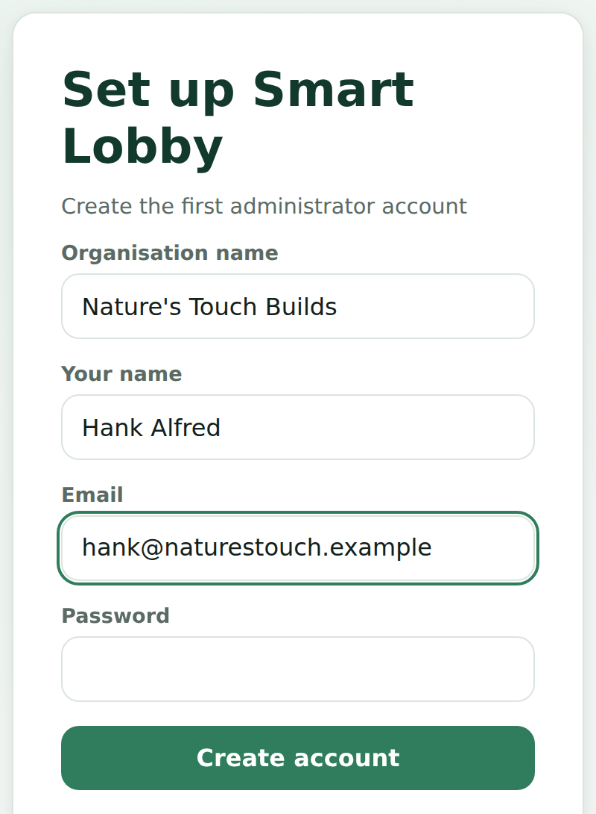
The account you create here is the owner. It is an administrator that cannot later be demoted or deleted, because an install nobody can reach the settings on is an install nobody can fix. Only the owner can create another administrator, and only the owner can restore a backup.
There is no reset email, because there is no supplier to send one. If every login is lost, the way back in is a command run on the machine holding the data — recoverable, but not from your phone at the gate on a Monday morning. Put it in whatever your organisation uses for passwords, now, before you carry on.
From then on the same address shows an ordinary sign-in screen.
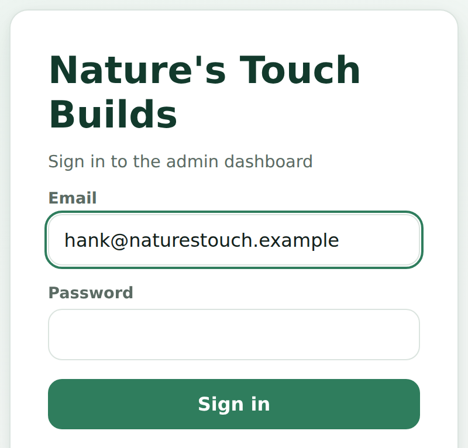
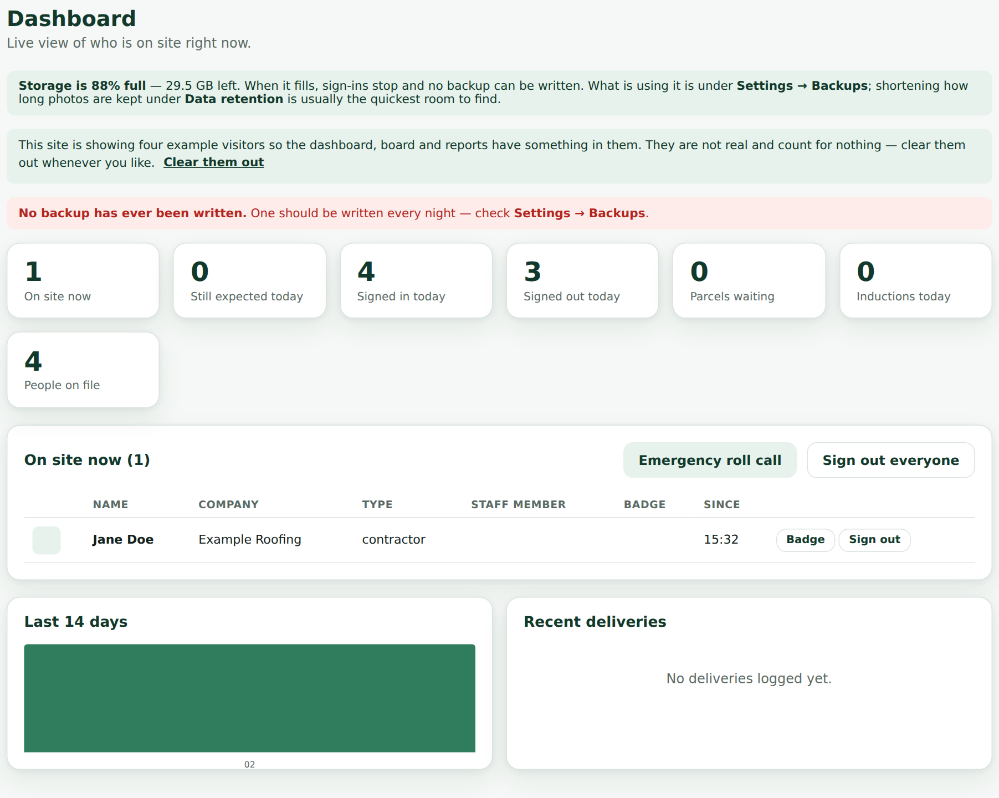
The menu down the left is the whole system. Roughly, top to bottom:
The settings pages have no Save button. A change is written as you make it, and a small Saved pill confirms it. If you are used to hunting for a save button, you are not missing one.
Leave the examples where they are for now. Chapter 22 clears them, once you have something of your own to look at.
Settings → Branding. Twenty minutes here is the difference between a kiosk that looks like your site and one that looks like a demo.
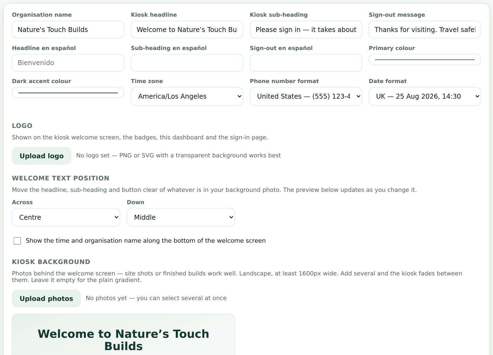
This is the one setting that is painful to change later. It is the site's own time zone, and everything that names a day or a time uses it: the date on a badge and inside the badge number, the "today" counts, the charts, and every arrival time on the dashboard.
Times are stored as UTC, so changing the zone later re-reads all your existing history in the new one rather than shifting it — which is correct, but means yesterday's badge numbers no longer match yesterday's dates. Set it now and leave it alone unless the site itself moves.
A PNG or SVG with a transparent background works best; it appears on the kiosk, on printed badges, in the dashboard sidebar and on the sign-in page.
For the background you can set one photo or several that crossfade on a timer. A slider controls how much they are darkened so the welcome text stays readable, with a live preview beside it. Landscape, 1600px wide or more. Leave it empty for a plain gradient — which looks perfectly fine, and is better than a stretched photo.
Staff is the list a visitor picks from when the kiosk asks who they are here to see. Nothing else works properly until this has real people in it.
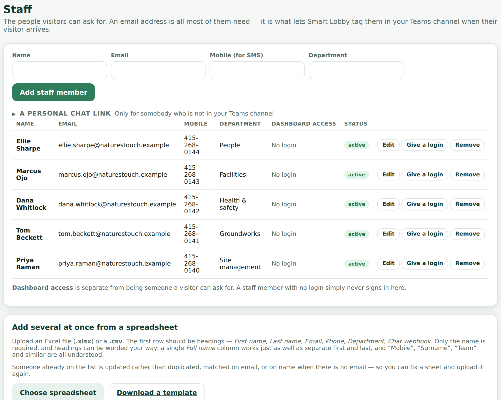
Do not type forty people in by hand. Upload an .xlsx or .csv: the first
row should be headings, first and last name in separate columns or one full-name column. Only the
name is required, and headings are matched loosely, so "Full name", "Phone", "Mobile" and "Team"
all work. A template is downloadable from that panel.
Somebody already on the list is updated rather than duplicated — matched on email, or on name where there is no email — so a corrected sheet can simply be uploaded again.
Somebody with no email cannot be notified, and cannot be @-mentioned in a Teams message — a mention Teams cannot resolve renders as raw markup, so it is left off instead. Get the addresses in now.
Skip this chapter if nobody signs in against a job.
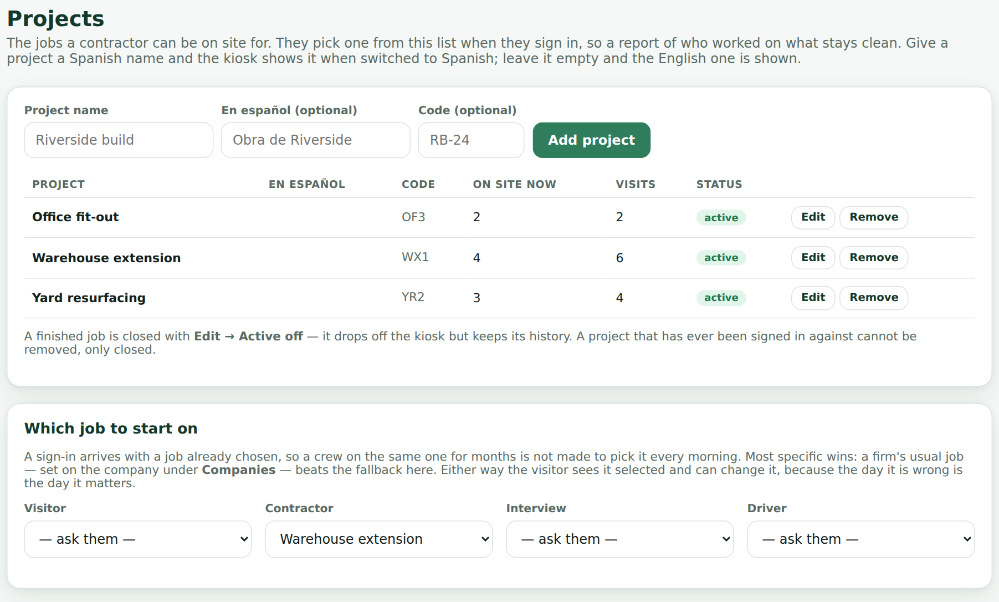
The project lands on the visit record, in the visits export, and — the part most sites are actually after — drives hours on site per project on the reports. If you want that figure, set the project field to required for contractors in the next chapter but one.
Close a finished job by switching Active off: it disappears from the kiosk but keeps its history. A project that has ever been signed in against cannot be deleted, only closed.
A crew from one firm are on the same job every morning for four months. Made to choose it off a dropdown each time, they pick the top one, or the one they were on last month, or whichever their thumb lands on — and the hours report you are billing against quietly becomes fiction. So the kiosk can arrive with a job already chosen. Two places to set it, most specific first:
The firm’s job wins where both apply. A closed job is never offered, whatever is set against the firm — so closing a project is enough, and you do not have to go round unpicking it.
The field arrives filled in and selected, and the visitor can change it. What they choose is what is recorded. A default that could not be overridden would be worse than none, because the day it is wrong is the day somebody is on the other job and nobody notices for a month.
Sign-in setup → Visitor types decides what a visitor sees when they walk up to the tablet.
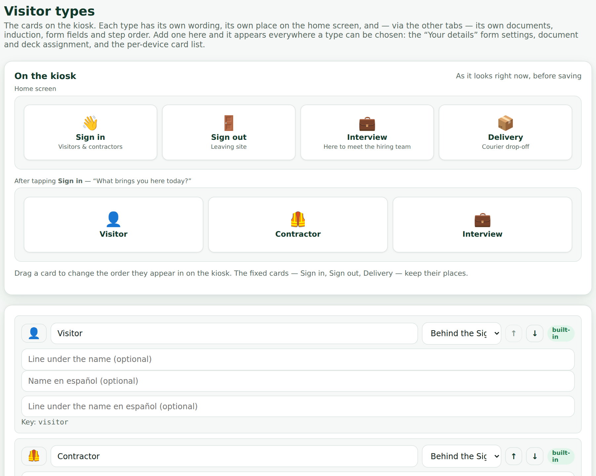
Each type carries a name in both languages, an icon, and where it appears: its own card on the home screen, an option behind Sign in, both, or hidden. Press the icon to open a picker of emoji chosen for the job — things that read as a delivery driver from six feet away.
Add your own if none of those fit. A new type immediately gains its own form settings, document assignments, induction targeting and per-device placement.
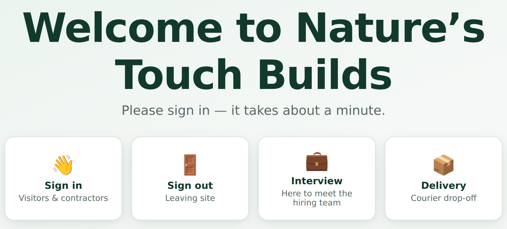
/kiosk/ in another tab while you work —
it reloads itself within about twenty seconds of any change you save.Settings → Visitor form is a grid: the fields down the side, your visitor types across the top. Every cell is off, optional or required.
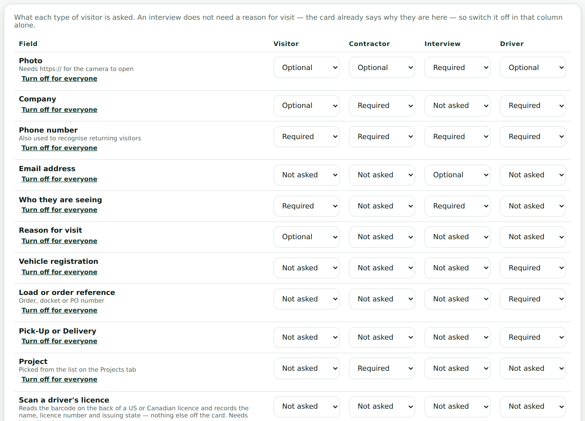
Every field is another thing somebody types one-handed with a queue behind them. A useful default:
| Field | Visitor | Contractor | Driver |
|---|---|---|---|
| Photo | Optional | Optional | Off |
| Company | Optional | Required | Required |
| Phone | Required | Required | Optional |
| Who they are seeing | Required | Off | Off |
| Project | Off | Required | Off |
| Vehicle, docket, in or out | Off | Off | Required |
Under Wording you can rename a field per type — a driver is asked for a haulier, not a company — and add a line of help underneath it.
It is how a returning visitor is recognised, and how somebody booked in advance is matched to their booking. A site that does not collect it makes every visitor a stranger every time.
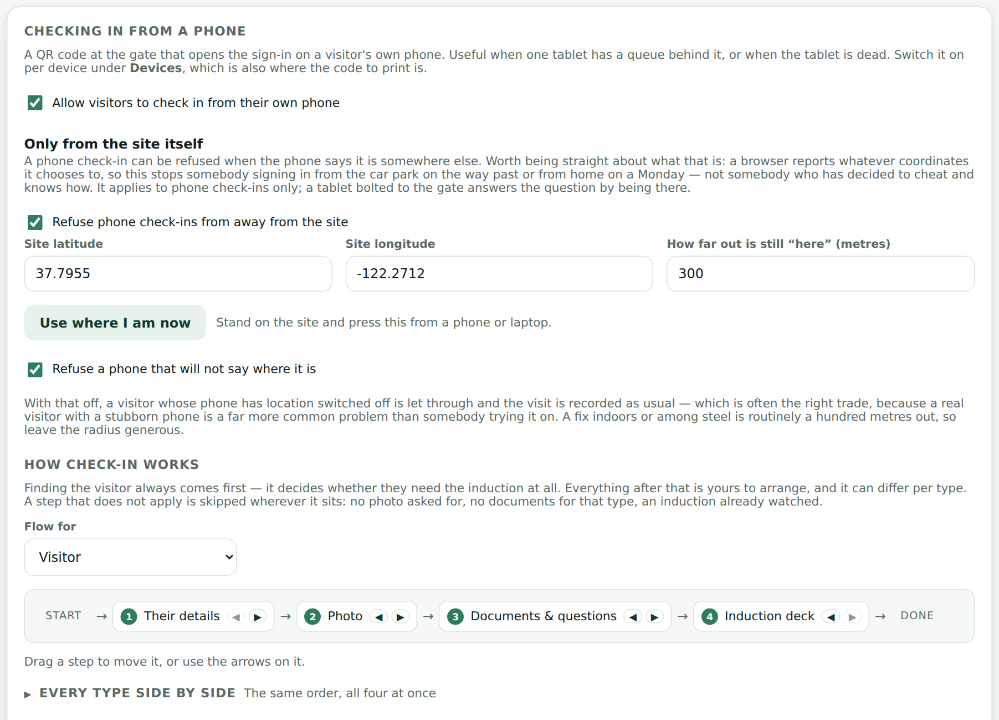
Three settings here are worth a moment:
The order the four sign-in steps are asked in — details, photo, documents, induction — is set per visitor type under Settings → The order things are asked. A contractor can watch the induction before signing anything while visitors keep the usual order.
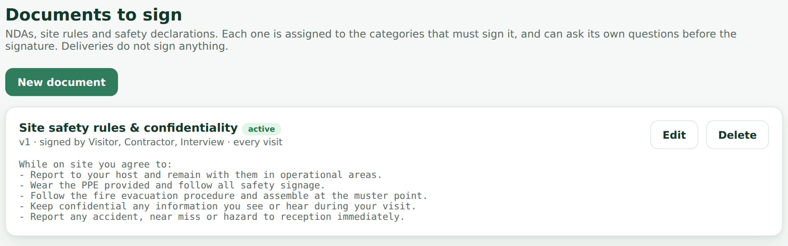
A document is either wording you type here, or an uploaded PDF or Word file — which is what most sites want, because the site rules already exist as a document somebody spent a long time on. Save the document first, then reopen it and use Upload PDF or Word.
The file is rendered to page images, so it reads on the kiosk exactly as it was drafted. The layout of a safety document is part of what is being agreed to.
A document can carry its own questions, asked just above the signature: yes/no, a short answer, or a choice from your own options. A question can depend on an earlier answer — Only ask this if — so a No opens one follow-up and a Yes opens another.
A document with questions and the signature switched off is a questionnaire: the visitor answers and carries on. Useful for a health declaration where a signature adds nothing.
Editing a document, or uploading a new file, bumps its version. Copies already signed stay exactly as they were signed, and each signature records the version and the language on screen at the time — so it is always known which wording somebody actually agreed to.
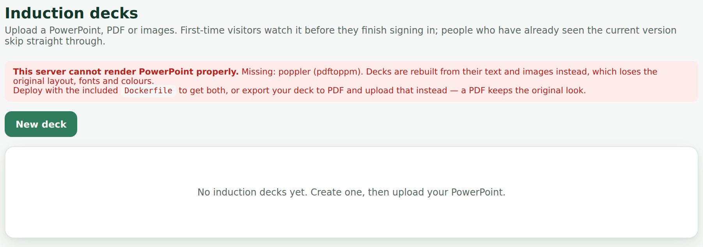
First-time visitors always watch it. Returning visitors only watch it again if the deck version changed, or you set "repeat after N days", or you tick "show it every visit". Uploading a new file replaces the slides and bumps the version, which is deliberate: everyone sees the new induction once, including people who watched the old one.
PowerPoint shrinks text that overflows its box and stores only the shrink factor; the renderer on the server ignores it and draws the text full size, so a tight slide comes out with words under the pictures. Nothing on the server can undo that. File → Export → PDF bakes the layout in, and the PDF is still split into slides, so nothing else about the deck changes. Always check with Preview after uploading.
If you need proof people actually read it, set minimum seconds per slide: Next shows a countdown and only unlocks when the time is up. Completion is stored per person with the version and the seconds taken, and appears on the visit record.
Off by default, and plenty of sites never turn it on. Skip this chapter if you do not have a label printer.
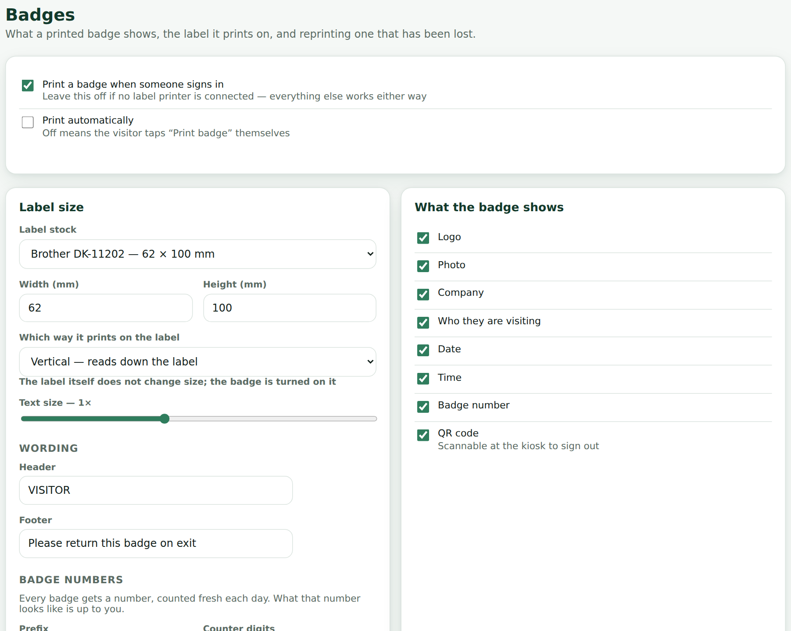
The badge number is built from tokens, with a live sample as you type. The default
{prefix}{yy}{mm}{dd}-{seq} gives NTB260830-004. You can set a different
prefix per visitor type so contractors and drivers run separate series.
iPads print over Bluetooth only from the manufacturer’s own app, never from a web page. A Bluetooth-only printer cannot print badges here. Network or Wireless Direct is what you need.
Until you do this, arrivals are recorded and shown on the dashboard but nobody is told. That is a perfectly reasonable place to start; it is also the thing most sites want most.
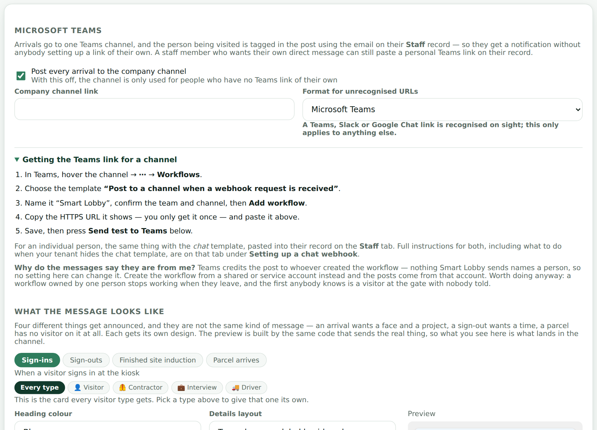
| Channel | What it needs | Effort |
|---|---|---|
| Microsoft Teams | A Workflows URL | Ten minutes, no admin consent |
| Slack | An incoming webhook URL | Five minutes |
| Google Chat | An incoming webhook URL | Five minutes |
| SMTP host, port, user, password | Depends on your mail provider | |
| SMS | A Twilio account | Twenty minutes, and it costs per text |
| Generic JSON | Any URL you control | For driving something else |
Start with one. Teams or Slack is the usual answer, because the message can tag the person being visited and they are already looking at it.
Teams credits every post to whoever created the workflow, so a flow you make under your own account produces arrival messages that read as being from you. Nothing Smart Lobby sends names a person — there is no setting anywhere in it that changes this — so the only way to change the name is to create the workflow from a different account.
Use a shared or service account for it. The name is the smaller half of the reason: a workflow owned by one person stops working the day they leave or their licence changes, and the first sign anybody gets is a visitor standing at a gate with nobody told.
Chat notifications go to a company channel that sees every arrival, and to each person's own webhook for their own visitors. Switch the channel off being always-on and it becomes a fallback for people who have no webhook of their own.
Most sites end up wanting two different things at once, and they are set up in two different places:
They are not alternatives: the company channel still gets everything either way. Adding a channel does not take anything away from it.
There is also Also tell on the same card, which names individual staff. The difference is who keeps the list up to date. Naming people needs an administrator in this panel every time somebody joins or leaves the role; a channel does not — whoever runs that team in Teams adds and removes people themselves. Name people for the one safety officer who wants every contractor. Use a channel for a group of people who between them need to know.
Right-clicking a Teams channel and choosing Copy link gives you a link that opens the channel. It is not somewhere a message can be posted, and if it were accepted nothing would ever arrive with nothing to say why. Smart Lobby refuses it and tells you so. The link you want comes from Workflows → "Post to a channel when a webhook request is received" and is shown once, at the end.
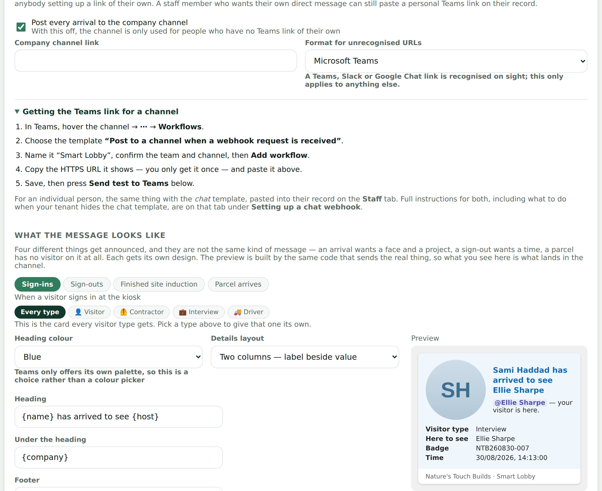
You do not have to touch any of this to get working notifications; the defaults are sensible. Come back to it once arrivals are flowing. One thing worth knowing is there: the photo on the card can be small, medium or large, and it is tappable — whoever the message reaches can press it to open the visit record and see the person properly, which is the whole point of a photograph on a card about somebody arriving.
Tick Notify when a device goes offline and the same company channel gets a card when a tablet stops checking in, and another when it comes back. It is off by default because a site with no chat set up would have nowhere to send it.
The timing, since it is the question everybody asks: each tablet checks in every twenty seconds, the Devices page shows it as offline after five minutes, and the chat message goes out once it has been quiet for fifteen — a window you can change. Fifteen rather than five is deliberate: site wifi drops for two or three minutes fairly often, and a channel that cries wolf gets muted, which is worse than no channel at all.
Every test goes to the address in Send test emails to and nowhere else. You cannot accidentally send a test arrival to your whole company channel while setting it up.
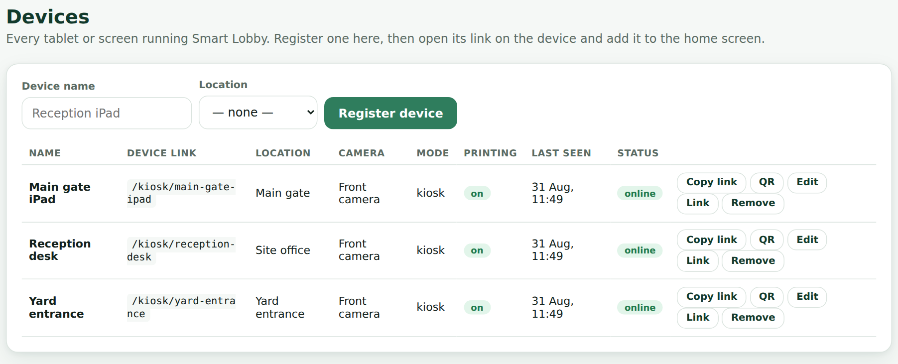
Register the tablet here before you touch the tablet itself. It gets:
/kiosk/north-gate-ipad. Because the device is named
in the address, a home-screen icon always comes back as that device.Press Copy link and send it to yourself; you will need it in a moment.
QR on a device shows both of its addresses as codes to point a camera at. They are not interchangeable, and it is worth being clear which is which before you print anything.
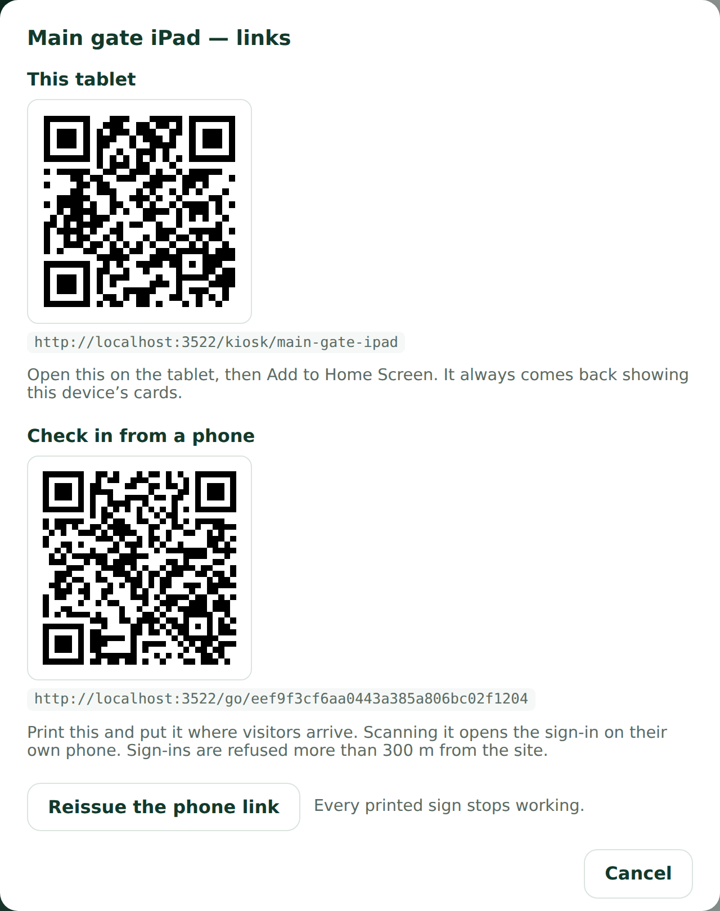
Phone check-in is off until you switch it on in two places, which is deliberate: it is the one route into your site that is not a device you control.
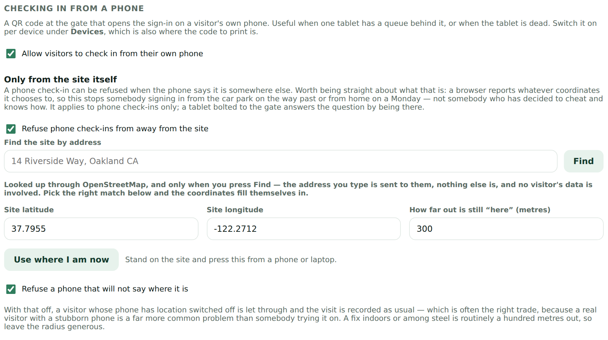
Then set where the site is, so a phone check-in from somewhere else is refused. There are three ways, because each of them is useless to somebody:
Whichever you use, look at the map underneath. It draws the circle your fence actually is, over the real place, with a scale bar. Two decimal numbers and a radius in metres are not something anyone can check by reading them — a digit in the wrong place puts the gate in the next county, and the first you would hear of it is a visitor at the gate who cannot sign in. On the map it either sits over your site or it obviously does not.
The map is a fourth way of placing the site, and usually the quickest way to finish the job:
Leave the radius generous — 250 to 300 metres is sensible — because a phone’s idea of where it is indoors, in a steel-framed building or among stacked containers, is routinely a hundred metres out. Check on the map that the whole yard is inside the circle, gates and car park included.
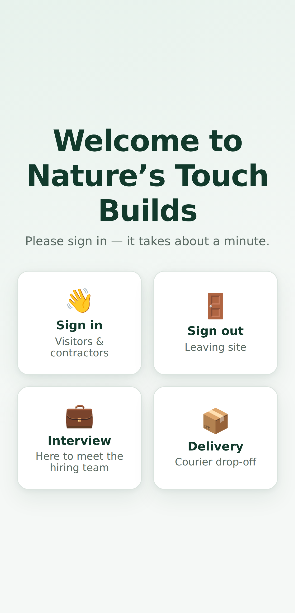
A browser reports whatever coordinates it chooses to report. A phone can be told to lie, and a laptop with developer tools open can be told to lie in about fifteen seconds. This stops somebody signing in from the car park on the way past, or from bed on a Monday morning — the two things that actually happen. It is not an access control, and nobody should be told that it is. A tablet bolted to the gate answers the question by being there; that is why the fence applies to phone check-ins only.
There is a second decision underneath it: Refuse a phone that will not say where it is. With it on, a visitor who taps Deny cannot check in from their phone and has to use the tablet. With it off, they are let through and the visit is recorded as usual. Off is often the right trade — a real visitor with a stubborn phone is a far more common problem than somebody trying it on — but it is your call, and the setting exists so that it is a decision rather than an accident.
If you ever need to invalidate a printed sign — it went up in the wrong place, or you would rather it stopped working — Reissue the phone link on the QR screen mints a new code and stops the old one at once. Every sign already printed goes dead, so reprint before you press it.
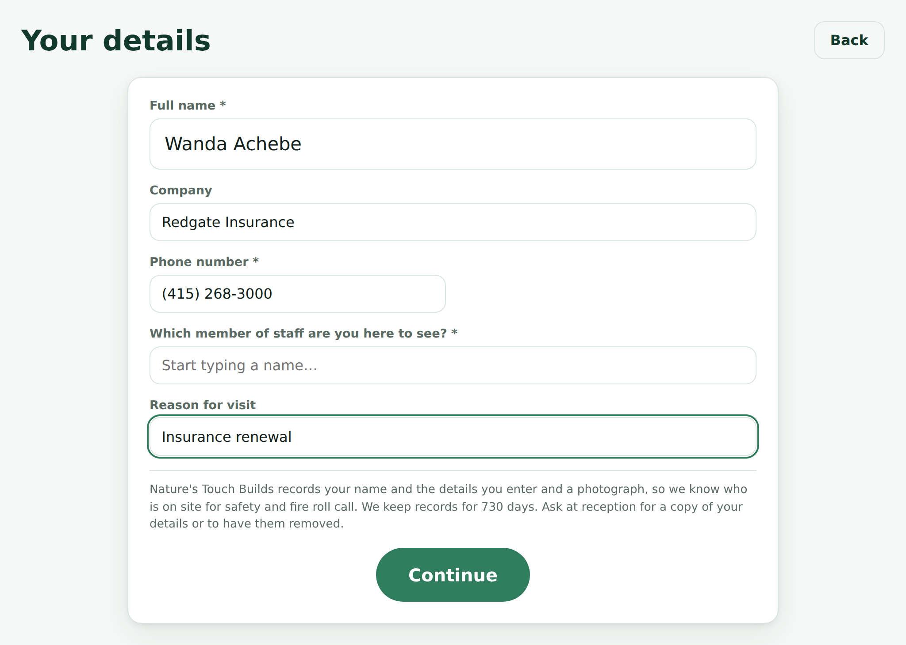
A third-party kiosk browser must both hold the camera permission itself and forward the
page’s request. Ones that skip the second part deny it silently, with no prompt at all. Open
/check/ on that tablet — it reports what that browser actually allows. Safari with
Guided Access is the reliable alternative.
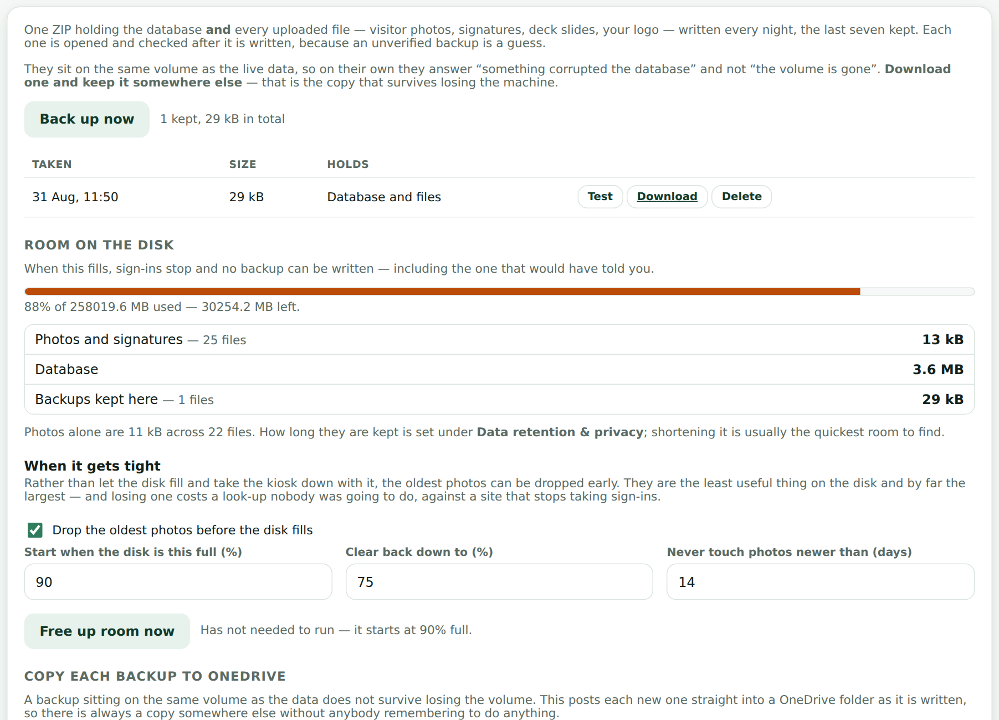
The nightly backup runs on its own from the moment you install, so there is nothing to switch on. Two things are worth doing today.
Backups sit on the same volume as the data, so on their own they answer "something corrupted the database" and not "the volume is gone". Posting each new one straight into a OneDrive folder is what makes a copy survive losing the machine. The destination is a Power Automate flow — "When an HTTP request is received" → "Create file" — which needs no Azure app registration and no admin consent. Step-by-step instructions are on that page.
A backup nobody has ever opened is a promise, not a copy. Test opens one, reads the database inside it, and says whether it would actually restore — schema, accounts, and whether the photos the records point at are really in the archive. It changes nothing. Do it now, so you know what a good answer looks like.
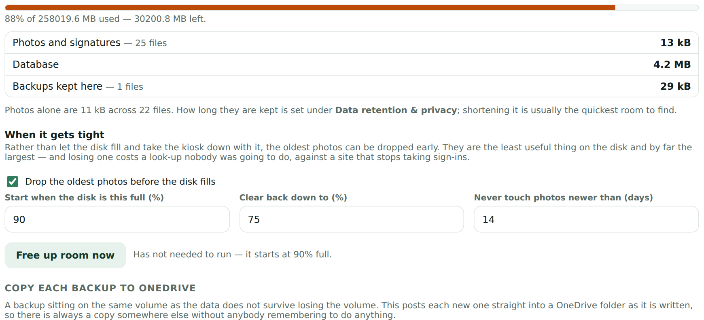
Photos are what fill a disk. The pressure valve — under When it gets tight — drops the oldest photos before the volume fills, never inside a floor window and never quietly. Leave it on; a full disk stops sign-ins altogether.
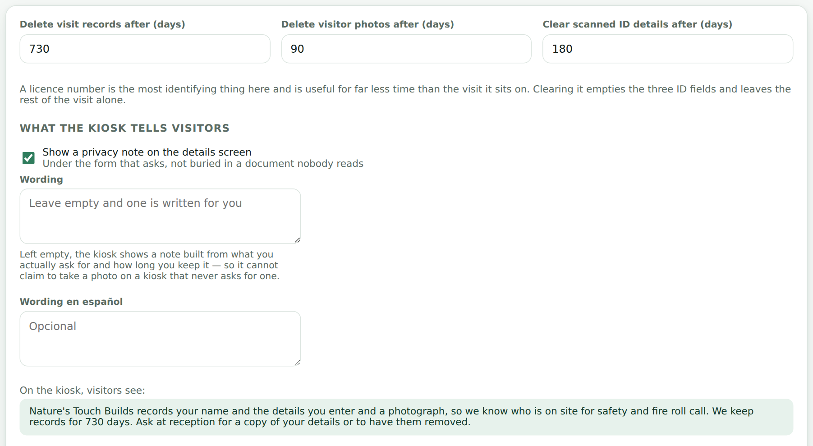
The defaults are 90 days for photos, 180 for licence details and two years for visit records. If your organisation has a retention policy, this is where it goes, and it is much easier to set now than to explain later.
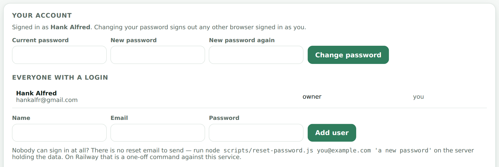
| Level | Give it to |
|---|---|
| Reception | The front desk. Visits, expected, the registry, projects and reports. |
| Clerk | Whoever handles trucks and parcels, and nothing else. |
| Manager | Both of the above together. Not the settings. |
| Administrator | Everything, including settings, backups and accounts. Only the owner can grant it. |
Give people their own login rather than sharing one. Every action is recorded against whoever was signed in, and an audit log that names the wrong person is worse than no audit log.
A password set by somebody else can do exactly two things until it is changed: show who the account is, and change its password. So handing somebody a password does not leave you able to sign in as them afterwards.
Half an hour, before anybody real walks up to it. Every one of these has caught something on a real install.
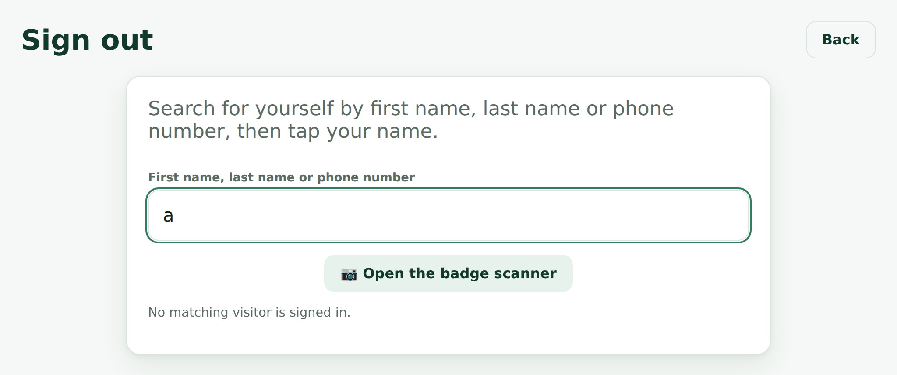
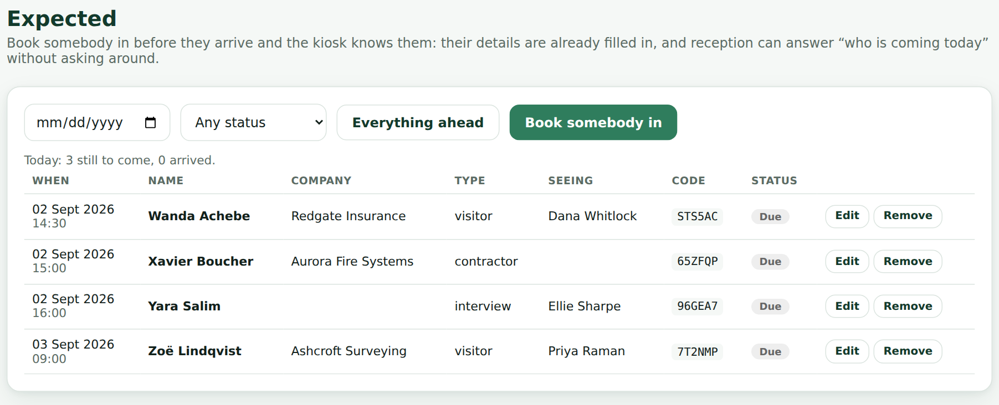
Five things to look at, once a day, for the first week.
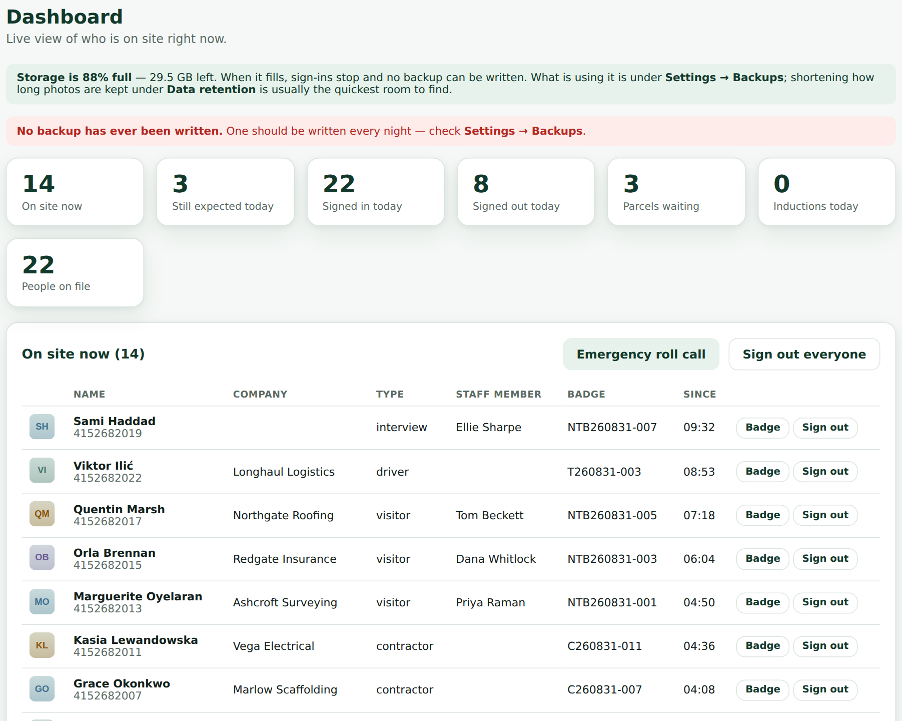
No volume is mounted, and everything will be erased on the next deploy. Stop and fix this before anything else. Chapter 3.
Kiosks check in every 20 seconds and reload when the configuration changes — but one part-way through a sign-in waits until the visitor has finished. If it is genuinely stuck, close the home-screen app and reopen it.
Open /check/ on that tablet. It is almost always a third-party kiosk browser not
forwarding the request. Use Safari with Guided Access.
The card appears only once a door exists and is enabled. A door left disabled while it is being wired is never offered.
The URL is probably a legacy Office 365 connector rather than a Workflows one. Create the flow again from "When an HTTP request is received".
Teams credits the post to whoever created the workflow. Nothing Smart Lobby sends names a person, so no setting here changes it — re-create the workflow from a shared or service account and paste the new URL in. Chapter 16.
That person has no email address on their staff record, or one Teams cannot resolve. Add it under Staff.
A font the deck used is missing on the server. Export the deck to PDF from PowerPoint and upload that instead — a PDF carries its fonts inside it and is still split into slides.
Margins None, headers and footers off, background graphics on. Then adjust the label size and text scale and print a test.
localhostSomething asked for an address before the server had ever been visited — a notification sent by a
scheduled job on a freshly started container, most likely. Set PUBLIC_URL to the
address you actually use and it stops guessing. Re-copy the board link afterwards, and reprint any
QR sign made from the wrong address.
Three different refusals, and they say which: too far from the site means the phone reported somewhere outside the radius — check the radius is not too tight before assuming anything about the visitor; needs your location means the phone declined to say, which is a setting you can relax; and a refusal that the sign is closed means phone check-in is off for that device, off for the site, or the code was reissued after the sign was printed. Chapter 17.
Reload it once. If it is still blank on every phone, the address on the sign is not one this server serves — reissue the link and reprint, rather than retyping it by hand.
There is no reset email. On the machine holding the data:
node scripts/reset-password.js # lists the accounts
node scripts/reset-password.js you@example.com 'a new password'On Railway that is a one-off command against the service with the volume mounted. It re-enables the account and signs out every session it had.
Day-to-day operation is in the Front Desk Guide. Everything this guide skipped — doors, printers, locations, the deleted-records archive, the security posture and the test suites — is in the Administrator Guide.